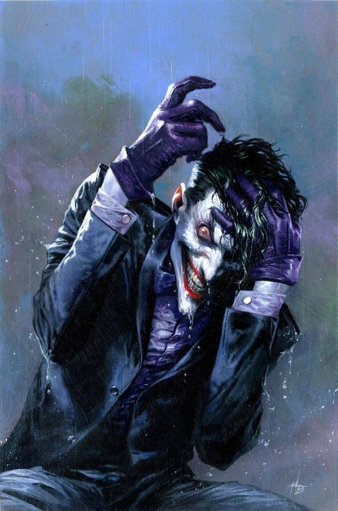
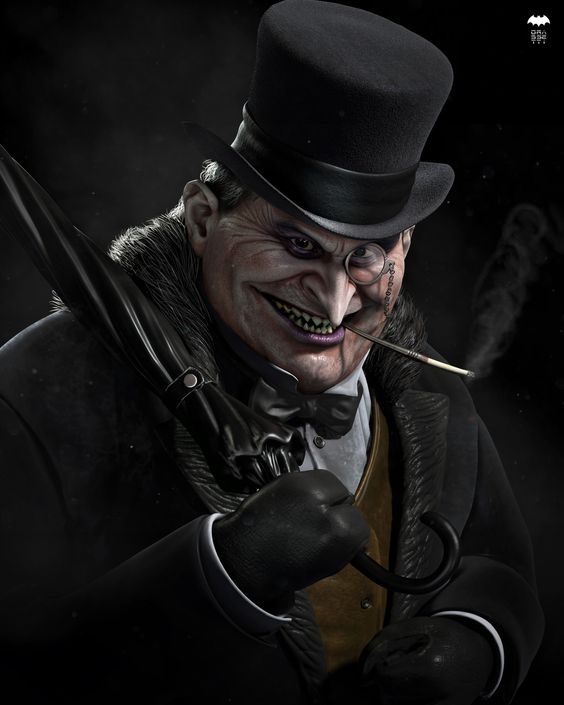
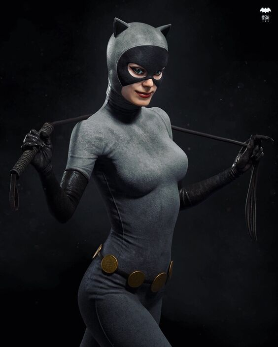

Joker

Tambien conocido como Guason, es sin duda el villano con mas fama del universo de
Batman. Aunque se
ha escrito muchas veces sobre el, nunca se ha revelado verdaderamente su nombre (razon por la cual
se lo nombra como John Doe), a pesar de que existe un cierto acuerdo de que la historia que le da
origen es apreciada en "La Broma Asesina". Este personaje inicialmente solo iba a aparecer en un
numero (Batman nº1,1940), en el cual moriria, pero la empresa de DC Comics tuvo otros planes para el
personaje.
Two Faces

Harvey Dent, antiguo fiscal del distrito de Ciudad Gotica caido en desgracia tras ser
afectado por
productos quimicos que le lanza el lider de la mafia, Sal Maroni.
Pinguino

Oswald Cobblepot, tambien conocido como el "Pinguino" debido a su aspecto fisico y su
forma de
vestir. Es un señor de la mafia de Ciudad Gotica, el cual pone a su disposicion el club nocturno Ice
Lounge como tapadera de negocios ilegales. A causa de no ver su cordura afectada, en numerosas
ocasiones a servido como fuented de informacion para el caballero oscuro.
Mr. Freeze

Alias que adopta el cientifico experto en criogenia Victor Fries, quien cae en
actividades criminales
debido a que su mujer fue diagnosticada con una enfermedad terminal. Tras colocarla en estado de
sueño criogenico, con el fin de detener el desarrollo de la enfermedad, Victor decide hacer todo lo
que este a su alcance para poder hallar una cura para su esposa
Catwoman

Gatubela es el nombre que adopta la ladrona Selina Kyle. Si bien su personaje comenzo y
es
considerado un villano, en multiples ocasiones a cooperado con Batman y hasta a sido un interes
amoroso del mismo.